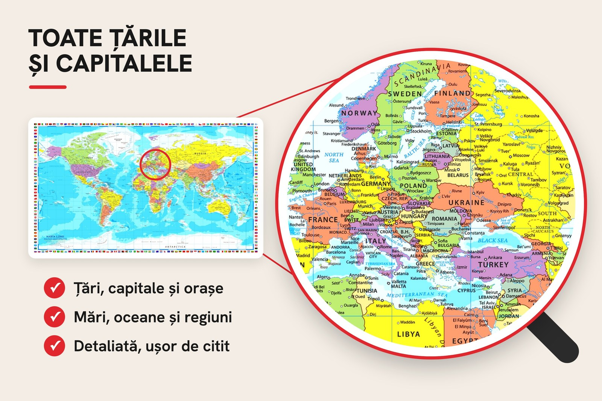
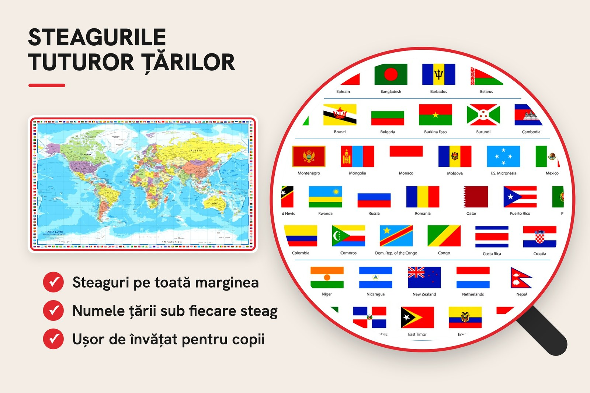
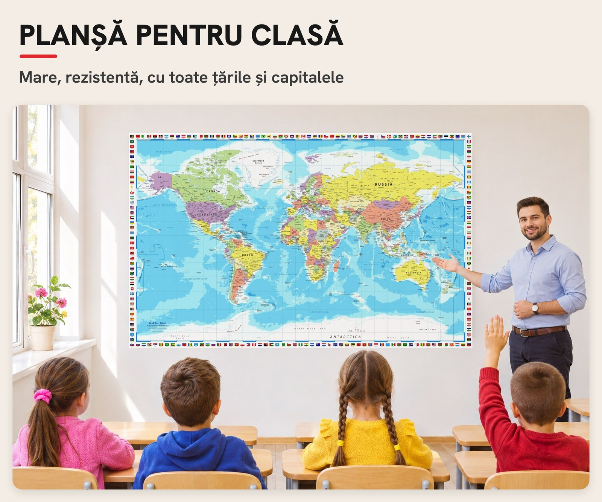
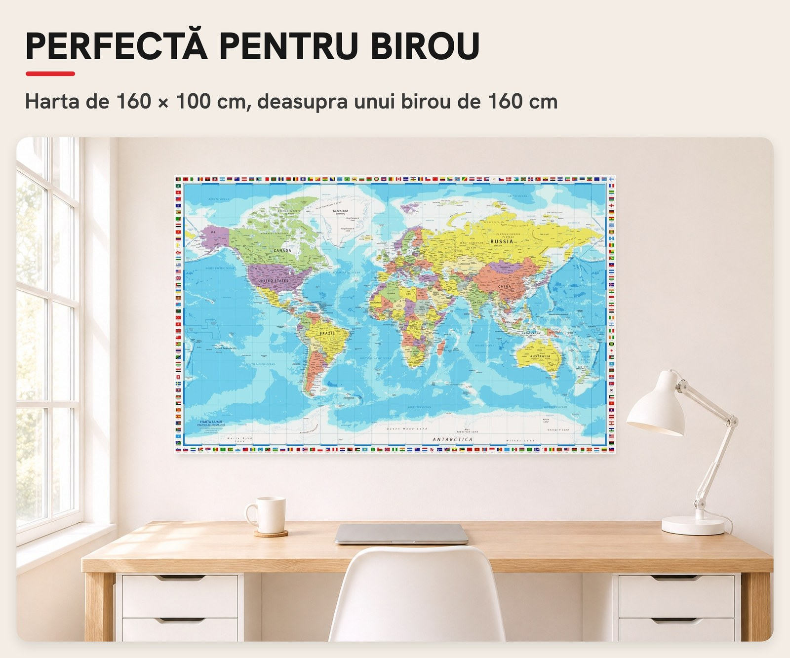
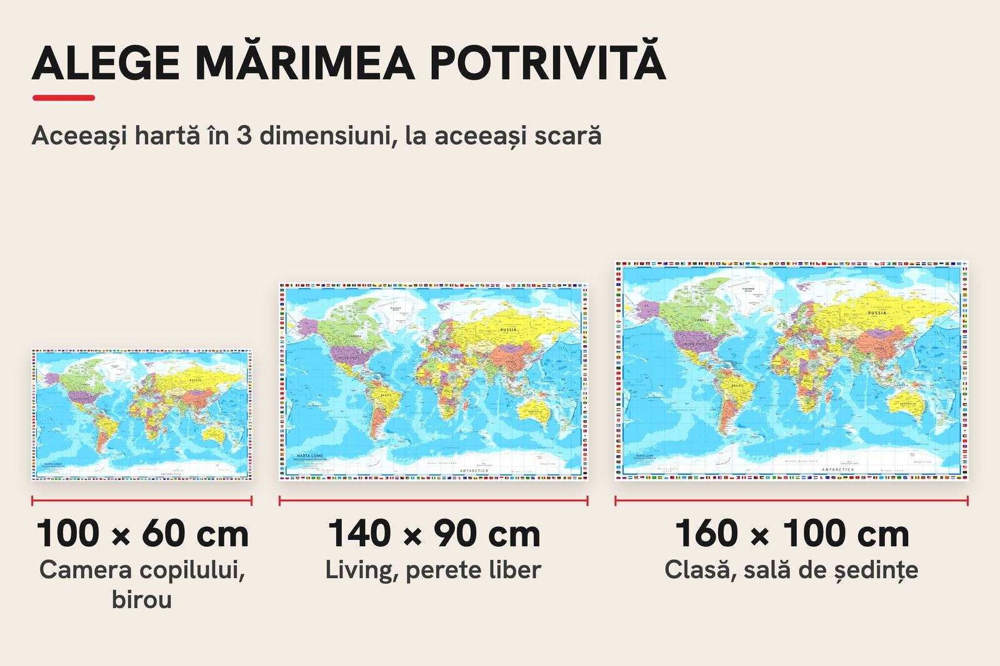
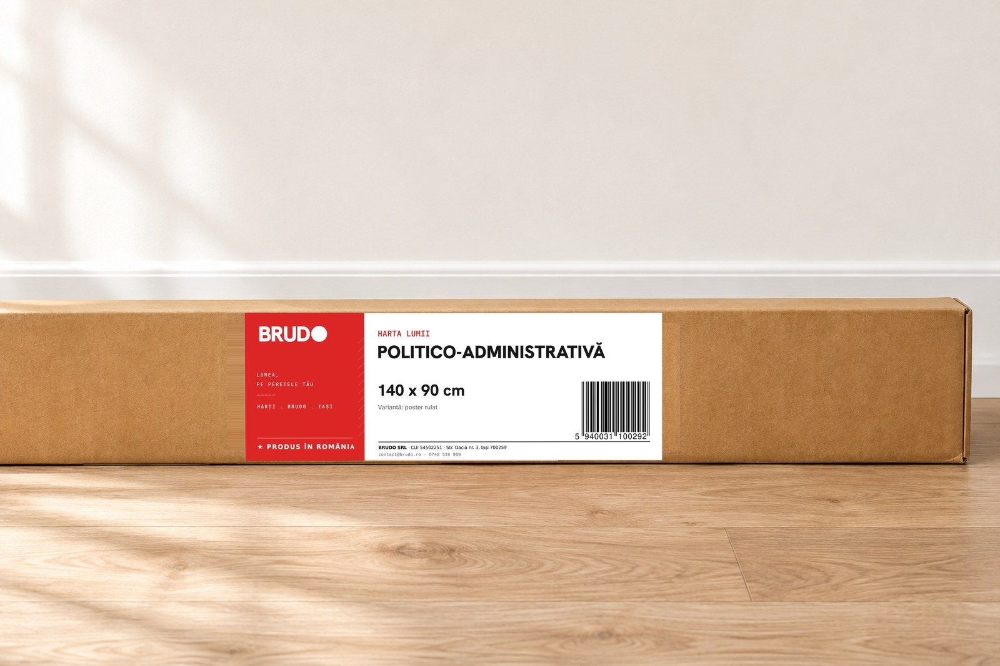
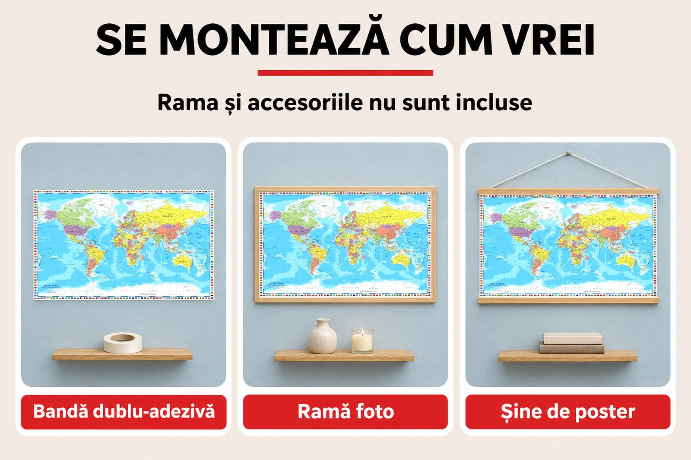

Descriere
Harta lumii de perete politica in engleza, cu tari, capitale si steaguri
Harta Politica a Lumii BRUDO este o harta a lumii de perete mare, tiparita pe PVC flexibil si impermeabil, care nu se indoaie si nu se rupe ca hartile din hartie. Mapamondul arata toate tarile lumii, colorate distinct, cu granitele, capitalele si orasele principale, plus steagurile tarilor pe margine. Denumirile sunt in limba engleza.
- Pentru copii si scoala: in camera copilului, pentru teme la geografie, pentru a invata tarile, capitalele si continentele, sau ca plansa didactica in clasa.
- Decor: poster decorativ pentru living, birou sau dormitor si idee de cadou pentru pasionatii de calatorii.
- Rezistenta: PVC mat, rezistent la apa; se sterge cu o laveta umeda.
- Dimensiuni: 100x60 cm, 140x90 cm (mai mare decat formatul clasic 100x70) si 160x100 cm.
- Livrata rulata, fara urme de indoire, in cutie de carton gata de oferit cadou.
Nu este doar o simpla plansa cu harta geografica a lumii, ci o compozitie echilibrata, in care informatia este distribuita aerisit, fara aglomerari sau zone greu de urmarit. Construita ca un poster geografic pentru perete, imbina utilitatea cu un aspect placut si devine rapid un punct de interes in orice incapere.

Harta politica a lumii detaliata, usor de citit dintr-o privire
Spre deosebire de hartile incarcate sau greu de citit, accentul este pus pe lizibilitate. Pe harta gasesti:
- tari colorate distinct si granite de stat clare
- capitale marcate separat de celelalte orase
- orase principale, oceane si mari denumite lizibil
- steagurile tarilor pe marginea hartii
- coordonate geografice, discret integrate
Prin acest echilibru, harta devine mai mult decat o harta geografica: un poster geografic premium si un tablou decorativ care se potriveste in orice decor modern.

Harta lumii pentru camera copilului, scoala, living sau birou
Finisajul mat si culorile echilibrate fac din aceasta harta decorativa pentru perete o piesa usor de integrat, indiferent de stilul amenajarii. Se potriveste:
- in camera copilului, unde copiii invata jucandu-se unde se afla tarile si capitalele lumii;
- in clasa sau in cabinetul de geografie, ca plansa didactica mare si rezistenta;
- in living, ca harta mondiala si piesa centrala pe un perete liber;
- in birou, ca plansa de perete care adauga structura fara sa incarce spatiul.
Culorile sunt placute chiar si privite zilnic, iar harta ramane suficient de neutra incat sa nu limiteze restul amenajarii.


Harta lumii din PVC impermeabil, lavabila si rezistenta
Aceasta harta de perete este realizata din PVC flexibil cu densitate ridicata (aproximativ 440–510 g/m²), ceea ce ii ofera stabilitate si rezistenta in timp:
- rezistenta la apa: se sterge cu o laveta umeda, ideal in camera copiilor si in clasa;
- rezistenta la umiditate si praf;
- print digital UV care pastreaza culorile vii pe termen lung;
- finisaj mat, fara reflexii deranjante.
Harta se livreaza rulata, deci ajunge fara urme de indoire, cum te astepti de la un poster cu harta lumii de calitate.

Harta lumii mare: 100x60, 140x90 sau 160x100 cm
- 160 × 100 cm – harta lumii mare, extra-large, pentru birouri, sali de clasa sau pereti spatiosi.
- 140 × 90 cm – varianta echilibrata pentru living sau camera copilului, mai mare decat formatul clasic 100x70.
- 100 × 60 cm – dimensiune compacta, potrivita ca plansa pentru birou sau camera copilului.
Fiecare dimensiune pastreaza proportiile corecte si lizibilitatea.

Idee de cadou: harta lumii in cutie
Un cadou cu harta mondiala este practic si memorabil: pentru copii si scolari, pentru pasionatii de calatorii si geografie, la o mutare in casa noua sau de sarbatori. Harta vine rulata, in cutie de carton cu eticheta BRUDO, si ajunge repede pe perete.

Cum se prinde harta lumii pe perete
Harta nu are sipci si nu include un sistem de prindere, asa ca alegi singur cum o montezi. Majoritatea clientilor o prind cu banda dublu-adeziva. Alte variante:
- rama foto sau rama pentru poster;
- sine de poster.

Intrebari frecvente
- In ce limba este harta? Denumirile sunt in limba engleza.
- Se poate curata? Da, PVC-ul este rezistent la apa si se sterge cu o laveta umeda.
- Se indoaie la livrare? Nu, harta vine rulata, in cutie de carton.
- Include sistem de prindere? Nu; recomandam banda dublu-adeziva.
Harta Politica a Lumii BRUDO imbina claritatea informatiei cu un aspect placut: o harta a lumii de perete pentru copii, scoala si decor, care face orice spatiu sa para mai bine gandit.